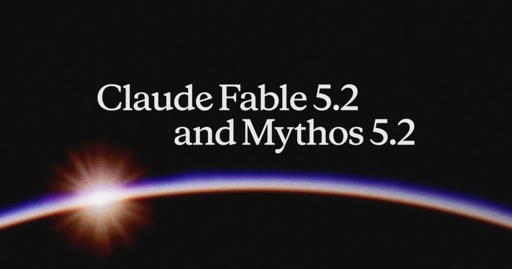
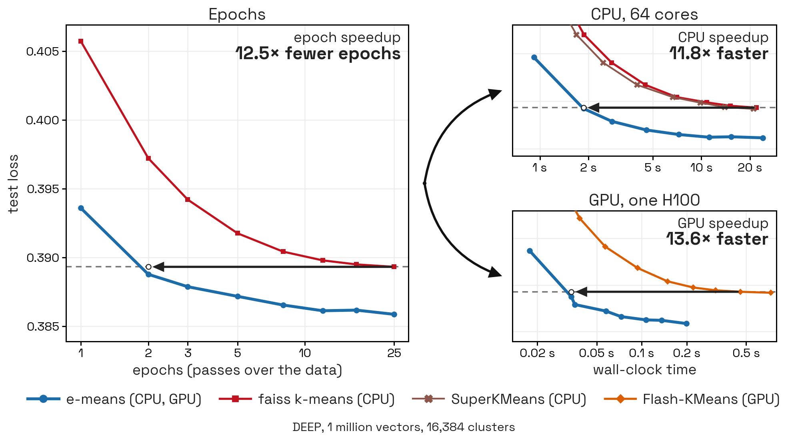
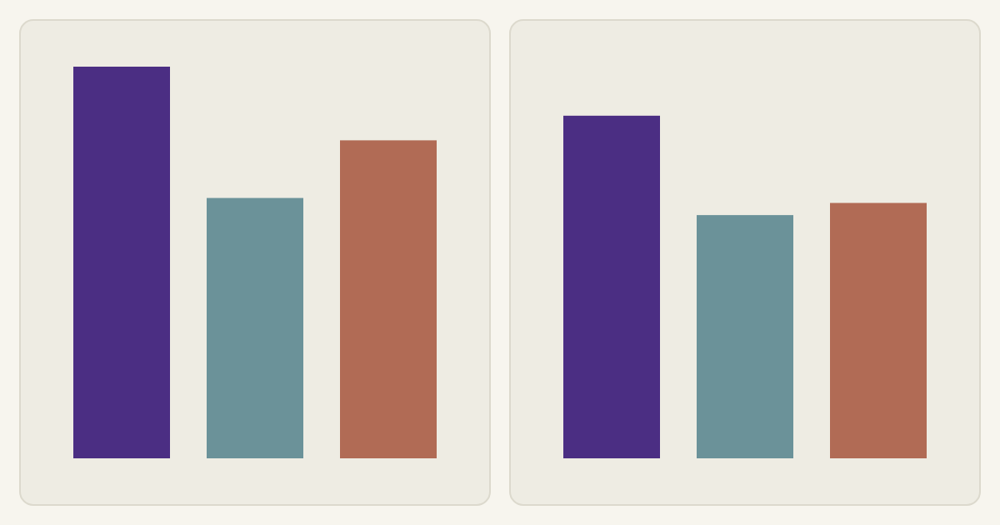

FieldUSPS boundary data returns after gaining 431 points.
ToolsA listener locates a beeping carbon monoxide detector.
Follow-Up
Foldable Flight’s paper-airplane catalogue returns with 1,096 points[1]
The catalogue’s Unite design is described as a time-aloft record holder.
Culture Desk★ 1,096 pts · 153 comments · ▲ +354 since the last edition
CHICAGO — Foldable Flight lists paper-airplane designs including Unite, which the site says holds a 31.2-second time-aloft record, and a prototype it says can fly over 300 feet. The catalogue includes designs by multiple named creators.[1]
The story has gained 354 points since the previous edition, rising from 742 to 1,096. Readers noted that some instructions are delivered as videos; one cited a 40-minute tutorial for Lancer.[11]
Image accompanying the source. www.foldableflight.com
AI Desk
Anthropic releases Claude Fable 5.2 and Mythos 5.2[2]
The two offerings share a model but differ in safeguards and access.
AI Desk★ 706 pts · 873 comments
Anthropic released Claude Fable 5.2 and Mythos 5.2 at $8 per million input tokens and $40 per million output tokens. It says outputs are up to 30% faster than their predecessors and that both offerings use the same underlying model.[2]
Fable has cybersecurity and biology safeguards; organizations seeking beneficial cyber or biomedical applications can apply for Mythos access. Anthropic reports 49.1% on FrontierCode 2.0 at Xhigh effort, a company-reported evaluation. Readers questioned pricing and the model naming.[12]

Image accompanying the source. www.anthropic.com
Follow-Up
USPS ZIP Code boundary product gains 431 points[3]
Quarterly updates are offered under licenses with distribution limits.
Field Desk★ 662 pts · 338 comments · ▲ +431 since the last edition
The U.S. Postal Service offers national ZIP Code boundary polygons based on delivery addresses and locations. Its enterprise and publication products include four quarterly updates, with limits on distribution or publication.[3]
The thread rose from 231 points in the last edition to 662. A geospatial practitioner cautioned that an address inside a polygon does not necessarily have that ZIP Code; another reader pointed to free Census ZCTA files as an approximate alternative.[13]
AI Desk
Amazon reports 98% lower ticket-labeling cost with Strands Decider[4]
The decision model selects among fixed labels rather than generating an explanation.
AI Desk★ 440 pts · 155 comments
Amazon engineers say replacing Claude Sonnet 4.6 with Strands Decider for internal ticket labeling cut model cost by 98%, saving millions of dollars annually. The company’s account puts its practical cost at about $500 per million tickets.[4]
The system chooses among 20 categories and a none option; longer tickets lose their oldest comments to fit the model’s context. The team tested both models in parallel and says JSON key order changed probabilities by up to 0.19. An HN reader described an earlier support-ticket classifier based on SVMs.[14]
Mini-batch updates use exponential moving averages and automatic scaling rules.
Science Desk★ 434 pts · 54 comments
The e-means researchers report reaching a lower test loss than 25 epochs of Lloyd’s algorithm in 1.2 to 3 epochs across their tested datasets. They report 10–45 times lower GPU wall-clock time against Flash-KMeans and 8–15 times lower CPU time against Faiss.[5]
The method updates clusters with exponential moving averages and revives small clusters by splitting larger ones. Its authors validated 24 dataset configurations. One reader reported an unsuccessful attempt to adapt the method to spherical mesh relaxation, a different use case.[15]

Image accompanying the source. e-means.github.io
Tools Desk
Watched maps satellite passes and associated imagery[6]
The browser application requires JavaScript and WebGL.
Tools Desk★ 406 pts · 74 comments
Watched presents satellite passes over a selected place and associated photographs, according to its Hacker News submission. The application says it needs JavaScript and WebGL to compute passes in the browser.[6]
A reader identifying as a geospatial worker praised the ability to see images taken by a satellite; another highlighted the view of its path and scanned area. The accessible page did not provide additional details about coverage or imagery sources.[16]
Image accompanying the source. www.watched.earth
Security Desk
A crafted RSA key embeds a message in a certificate[8]
The author describes controlling part of the public modulus.
Security Desk★ 195 pts · 63 comments
A security experiment embeds a readable message in the base64 representation of an RSA public key by modifying the modulus and finding a suitable second prime. The author says a certificate authority signed the resulting public key.[8]
The author cautions that the script does not check for insecure values, including primes that are too close together. A commenter warned that unauthenticated TLS cannot be called secure against active attackers; forward secrecy does not prevent an attacker from impersonating a server with a compromised key.[18]
Hardware Desk
Radio-signal fading reveals movement in a neighboring room[9]
A demonstration uses a local digital television signal and a radio receiver.
Hardware Desk★ 187 pts · 74 comments
A radio experiment detected movement in a neighboring room by observing selective fading in a local ATSC television signal. Reflections cancel the direct signal at some frequencies, making the received pattern sensitive to nearby movement.[9]
From a 490 MHz signal and the timing between observed stripes, the author estimated a walking speed of 1.3 meters per second. The article says Wi-Fi and LTE signals can also be used in principle; this demonstration used a radio receiver, not a television camera.[19]
Tools Desk
A multi-device listener locates a beeping detector[7]
Simon Willison used phones and computers to triangulate the sound.
Tools Desk★ 240 pts · 124 comments
Simon Willison says a system built with Claude Code located an intermittent beep to within about 40 centimeters. The source was an old carbon monoxide detector in a pile of boxes that needed replacement batteries.[7]
A Python server coordinates browser microphones via WebSockets; a shared chirp aligns recordings before the system estimates the sound location. Automatic device positioning worked poorly, so Willison added a rough manual placement mode. One reader suggested dividing the boxes between rooms as an alternative search.[17]
Image accompanying the source. simonwillison.net
Hardware Desk
A GPU kernel primer prompts questions about benchmarks[10]
Readers discuss memory placement and measurement practices.
Hardware Desk★ 175 pts · 15 comments
A GPU and kernel-optimization primer reached the front page with 175 points and 15 comments. The fetched article page returned no readable body text, so its technical claims could not be independently reviewed for this edition.[10]
In the discussion, one reader distinguished H200 high-bandwidth memory from on-chip shared memory and registers. Another emphasized measurement conditions including cache state, numerical error, thermal effects and repeated runs. These are reader observations, not results verified by the article fetch.[20]

Image accompanying the source. www.nabo.dev
Quote of the Day
“Being ‘inside’ a boundary does not guarantee you have that ZIP code”An HN reader on the USPS polygons [13]
The comment distinguishes mapped areas from the postal delivery addresses the ZIP Codes organize.
Box Score
Points and comments are from the front-page snapshot, not later live counts.
Front Page Ledger
Paper airplanes led by points; Anthropic’s model launch drew the most comments.
Front Page Ledger
Fresh stories
8
Follow-ups
2
Carried in digest
0
Wire stories
0
Combined points
4,541
Combined comments
1,923
Corrections & Clarifications
ZIP boundaries. USPS calls its map ground truth, but a geospatial reader says a location within a polygon does not guarantee an address’s ZIP. [3][13]
Model access. Fable and Mythos are not separate underlying models; Anthropic says their safeguards and access differ. [2]
TV detection. The radio demonstration observes signal fading using a receiver; it does not show a television camera looking through a wall. [9]
Cost comparison. Amazon’s 98% reduction compares a fixed-label decision model with its previous generative ticket-labeling workflow, not all uses of Sonnet. [4]
Publisher’s Note
Foldable Flight leads this morning. Its catalogue and the USPS boundary product return as follow-ups. The satellite page provided little accessible text, and the GPU primer’s body could not be extracted; both reports rely in part on their discussion threads.
Hacker News front-page candidate snapshot: November 10, 2026, 14:00:17 UTC. Scores and comment counts are from the fetched Algolia response. Selection compares the previous four archived editions; follow-up changes compare their most recent coverage. Article pages and discussions were retrieved for this edition.